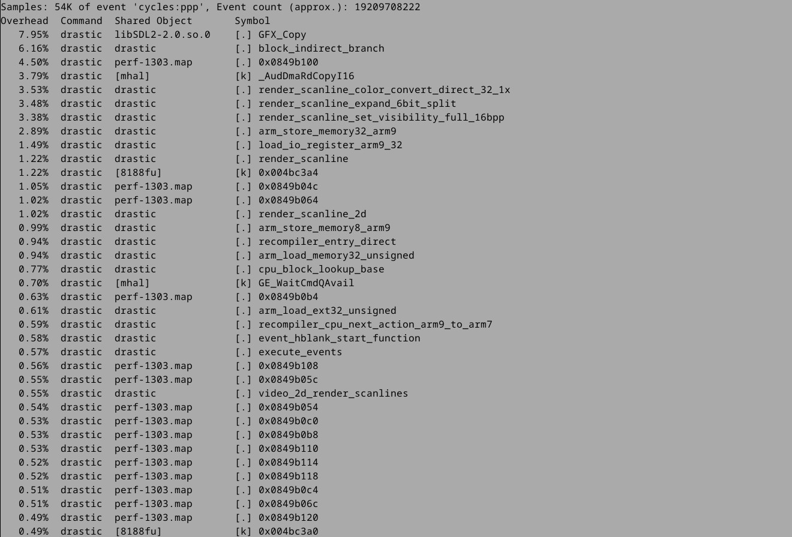

$ devel-su
# echo 0 > /proc/sys/kernel/kptr_restrict
# exit
$ top
1303 1290 root S 314m311.3 1 0.0 ./drastic /mnt/SDCARD/Roms/NDS/FF3.nds
$ cd
$ wget https://github.com/steward-fu/website/releases/download/xt897/perf.tar.gz
$ tar xvf perf.tar.gz
$ cd perf
$ LD_LIBRARY_PATH=lib ./perf record -p 1303
$ LD_LIBRARY_PATH=lib ./perf report
